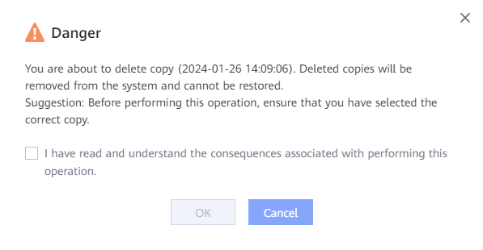
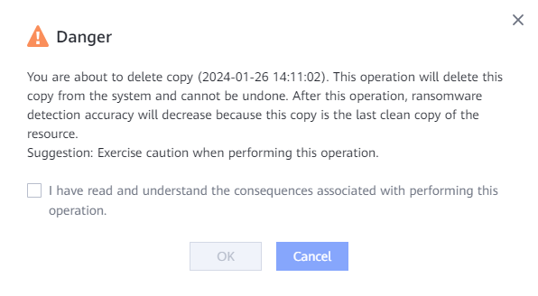

This section describes how to delete ransomware detection copies that are unavailable or no longer needed.
Precautions
- Before deleting a ransomware detection copy, ensure that the copy is no longer used for restoration.
- A copy whose ransomware detection status is Detecting cannot be deleted.
- If the last uninfected copy of a resource is deleted, the accuracy of subsequent ransomware detection for copies will be affected. Exercise caution.
Procedure
- Choose Explore > Ransomware Protection.
- Select VMware/CNware/NAS File Systems/NAS Shares/Filesets.

Only 1.6.0 and later versions support CNware.
- Click a resource copy.
- In the window that is displayed on the right, choose .
- The following dialog box is displayed. Confirm the information, select I have read and understand the consequences associated with performing this operation., and click OK.

When you delete the last uninfected copy of the current resource, the following dialog box is displayed. Confirm the information, select I have read and understand the consequences associated with performing this operation., and click OK.
